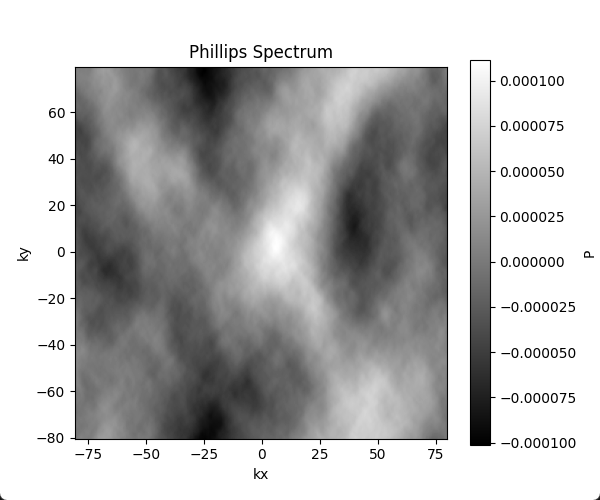
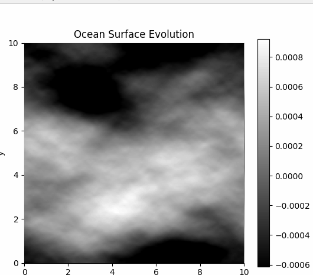
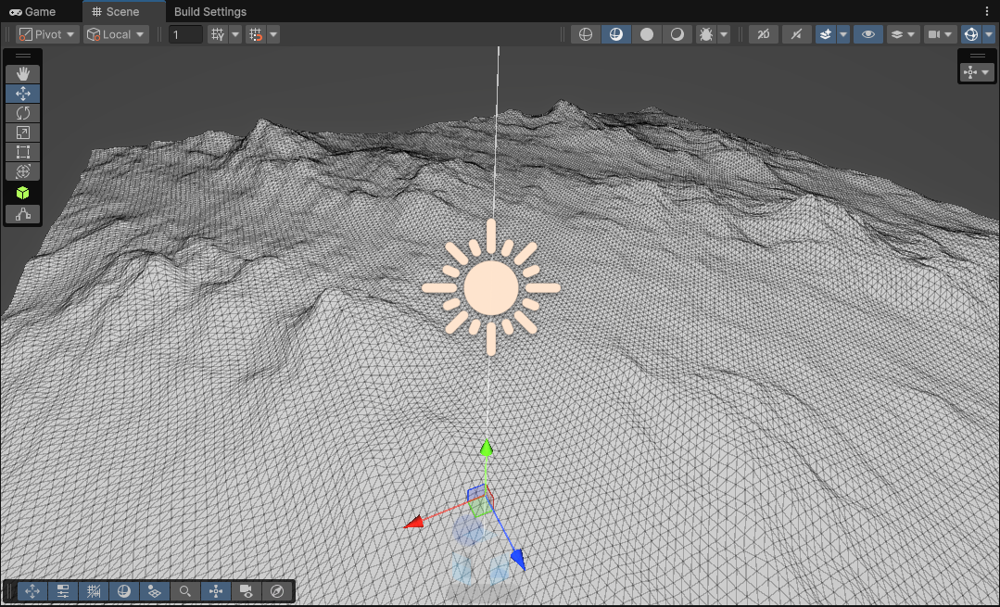
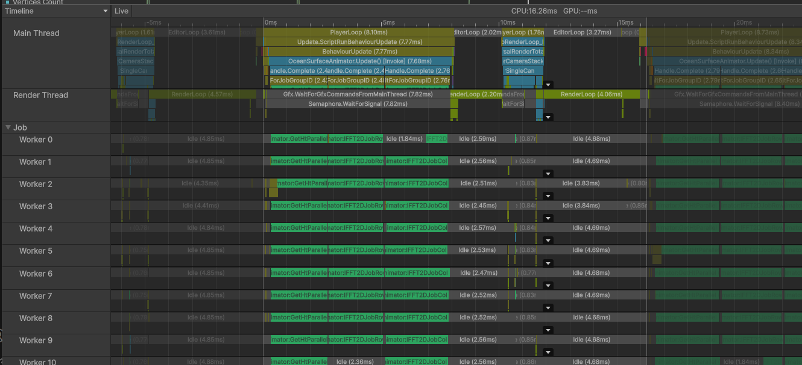

快速傅里叶变换水面
前言
好久好久之前就想啃一下FFT水面。这次下定心，硬啃公式推导一遍。
主要还是参考别人的文章，但把其中省略的推导过程全部手敲一遍。
主要目的就只是为了给自己记录一遍，大篇的定义就省略了。
傅里叶变换
这里水面的波形解释为时域空域更好理解。
频域F(ω)
时域f(x)
由时域f(x)得到频域F(ω)，称为傅里叶变换
由频域F(ω)得到时域f(x)，称为傅里叶逆变换
三种基底形式
1. 带相位正弦函数
$$ f(x)=\sum_{ω}^{} A(ω)sin(ωx+φ(ω)) $$
此时频谱要给出振幅A(ω)和相位φ(ω)，即
F(ω) = (A(ω),φ(ω))
2. 不带相位，余弦+正弦
利用三角恒等式
A * sin(ωx+φ(ω)) = A1 * cos(ωx) + A2 * sin(ωx)
得到
$$ f(x)=\sum_{ω}^{} A_1(ω)cos(ωx)+A_2(ω)sin(ωx) $$
这里可以看出A2(0) 取任意值不影响结果
此时频谱要给出振幅A1(ω)和A2(ω)，即
F(ω) = (A1(ω),A2(ω))
3. 复数形式
再利用欧拉恒等式
$$
\begin{equation}
\begin{split}
cos(ωx)=\frac{e^{iωx}+e^{-iωx}}{2}\\
sin(ωx)=\frac{e^{iωx}-e^{-iωx}}{2i}
\end{split}
\end{equation}
$$
得到
$$
f(x)=\sum_{ω}^{}
A_1(ω)(\frac{e^{iωx}+e^{-iωx}}{2})+A_2(ω)(\frac{e^{iωx}-e^{-iωx}}{2i})
$$
化简
$$
f(x)=\sum_{ω}^{}
\frac{A_1(ω)}{2}e^{iωx}+\frac{A_1(ω)}{2}e^{-iωx}+\frac{A_2(ω)}{2i}e^{iωx}-\frac{A_2(ω)}{2i}e^{-iωx}
$$
即
$$
f(x)=\sum_{ω}^{} (\frac{A_1(ω)}{2} + \frac{A_2(ω)}{2i})e^{iωx}+
(\frac{A_1(ω)}{2} - \frac{A_2(ω)}{2i})e^{-iωx}
$$
即
$$
f(x)=\sum_{ω}^{} \frac{iA_1(ω) + A_2(ω)}{2i}e^{iωx} + \frac{iA_1(ω) -
A_2(ω)}{2i}e^{-iωx}
$$
即
$$
f(x)=\sum_{ω}^{} \frac{A_1(ω) - iA_2(ω)}{2}e^{iωx} + \frac{A_1(ω) +
iA_2(ω)}{2}e^{-iωx}
$$
即
$$
f(x)=A_1(0) + \sum_{ω(ω>0)}^{}(\frac{A_1(ω) - iA_2(ω)}{2}e^{iωx} +
\frac{A_1(ω) + iA_2(ω)}{2}e^{-iωx})
$$
然后将A1(ω)延拓成偶函数，将A2(ω)延拓成奇函数。
$$ \begin{align} f(x)&=A_1(0) + \sum_{ω(ω>0)}^{}(\frac{A_1(ω) - iA_2(ω)}{2}e^{iωx} + \frac{A_1(ω) + iA_2(ω)}{2}e^{-iωx})\\ &=A_1(0) + \sum_{ω(ω>0)}^{}(\frac{A_1(ω) - iA_2(ω)}{2}e^{iωx} + \frac{A_1(-ω) - iA_2(-ω)}{2}e^{i(-ω)x})\\ &=A_1(0) + \sum_{ω(ω>0)}^{}\frac{A_1(ω) - iA_2(ω)}{2}e^{iωx} + \sum_{ω(ω>0)}^{}\frac{A_1(-ω) - iA_2(-ω)}{2}e^{i(-ω)x}\\ &=A_1(0) + \sum_{ω(ω>0)}^{}\frac{A_1(ω) - iA_2(ω)}{2}e^{iωx} + \sum_{ω(ω<0)}^{}\frac{A_1(ω) - iA_2(ω)}{2}e^{iωx}\\ &=A_1(0) + \sum_{ω(ω>0||w<0)}^{}\frac{A_1(ω) - iA_2(ω)}{2}e^{iωx}\\ &=\frac{2*A_1(0)-iA_2(0)}{2}e^{i*0*x} + \sum_{ω(ω>0||w<0)}^{}\frac{A_1(ω) - iA_2(ω)}{2}e^{iωx}\\ \end{align} $$
定义
$$
A3=\begin{cases}
2*A_1(ω) & ω=0\\
A_1(ω) & ω\ne0
\end{cases}
$$
$$ \begin{align} f(x)&=\frac{A_3-iA_2(0)}{2}e^{i*0*x} + \sum_{ω(ω>0||w<0)}^{}\frac{A_3(ω) - iA_2(ω)}{2}e^{iωx}\\ &=\sum_{ω(ω>0||w<0||w=0)}^{}\frac{A_3(ω) - iA_2(ω)}{2}e^{iωx}\\ &=\sum_{ω}^{}\frac{A_3(ω) - iA_2(ω)}{2}e^{iωx}\\ \end{align} $$
定义
$$
B(w) = \frac{A_3(ω) - iA_2(ω)}{2}
$$
得
$$
f(x)=\sum_{ω}^{}B(ω)e^{iωx}
$$
B(w)就是频谱的形式所以可以干脆得到
$$
f(x)=\sum_{ω}^{}F(ω)e^{iωx}
$$
因为eiωx是复数，所以F(ω)也是复数。其中包含两个分量，也就说明包含了振幅和相位两个信息。
高度
定义海浪高度为h(x,z)，如果能知道其频谱h̃(ω)，就可以通过傅里叶逆变换得到高度。
再离散化处理。即使用离散傅里叶变换(Inverse Discrete Fourier Transform, IDFT)来处理。
IDFT的定义为
$$
h(\vec{x},t) = \sum_{\vec{k}}^{}
\tilde{h}(\vec{k},t)e^{i\vec{k}\cdot\vec{x}}
$$
其中
x⃗ = (x,z)是空间坐标
k⃗ = (kx,ky)是频域坐标，kx,ky均为频率，相当于前文中的ω
h̃(k⃗,t)为频谱
这里的频谱比之前多了参数t，表示时间。即频谱是一个时变的函数。
相应的高度函数也是一个时变的函数。
这里的eik⃗ ⋅ x⃗中的k⃗与x⃗是点乘，即ei * (kx*x+ky*y)
表示：
固定z,只让x变化时频率是kx，
固定x,只让z变化时频率是ky。
这里的求和意思是所有频域坐标k⃗点进行求和。
k⃗在频率平面上，以原点为中心每隔$\frac{2\pi}{L}$(L表示海平面的尺寸)取一个点，共有N * N个点。
$$
k_x=\frac{2\pi n}{L},n\in\{-\frac{N}{2},···,\frac{N}{2}-1\}
$$
$$
k_z=\frac{2\pi m}{L},m\in\{-\frac{N}{2},···,\frac{N}{2}-1\}
$$
x⃗在空间平面上，以原点为中心每隔$\frac{L}{N}$取一个点，也共有N * N个点。
$$
x=\frac{L}{N}u,u\in\{-\frac{N}{2},···,\frac{N}{2}-1\}
$$
$$
z=\frac{L}{N}v,v\in\{-\frac{N}{2},···,\frac{N}{2}-1\}
$$
对于实时渲染，取N=64就够用了，即64*64=4096个频率点，即4096个不同频率的正弦信号叠加。
另外当N为偶数时，上述所有频率K对应的周期$T=\frac{2\pi}{k}$均为L的约数，所以是四方连续的。
菲利普斯谱
通常采用菲利普斯谱，公式如下
h̃(k⃗,t) = h̃0(k⃗)eiw(k)t + h̃0*(−k⃗)e−iw(k)t
h̃(k⃗,t):波矢 k⃗ 对应的波浪高度的傅里叶系数，随时间变化。频域中的波高信息。
其中
h̃0*表示h̃0的共轭复数，k表示k⃗的模
$w(k)=\sqrt{gk}$表示频率，g为重力加速度。
$$\tilde{h}_0(\vec{k})=\frac{1}{\sqrt{2}}(\zeta_r+i\zeta_i)\sqrt{P_h(\vec{k})}$$
其中ζr与ζi为高斯随机数，均值为0，方差为1
$$ P_h(\vec{k})=A\frac{e^{-1/(kL)^2}}{k^4}|\vec{k}\cdot\vec{w}|^2 $$
其中w⃗为风向，L和之前的尺寸不是一个意思。定义为：
$$ L=\frac{V^2}{g}$$
其中V为风速，g为重力加速度。
上述公式来源于海洋统计学
python实现
为了方便且快速实现，先使用numpy库来实现FFT的高度图。
先来看看h0
import numpy as np
import matplotlib.pyplot as plt
def phillips_spectrum(kx, ky, wind_dir=(1.0, 0.0), wind_speed=20.0, A=1, g=9.81):
# 波向量大小 k
k = np.sqrt(kx**2 + ky**2)
k[k == 0] = 1e-6 # 避免除以零
kLength2 = k * k
kLength4 = kLength2 * kLength2
# 风向单位向量
w = np.array(wind_dir)
w = w / np.linalg.norm(w)
# 风影响尺度
L = (wind_speed ** 2) / g
# 计算波向量与风向的点积项
k_dot_w = (kx * w[0] + ky * w[1]) / k
k_dot_w_squared = k_dot_w ** 2
VV = np.exp(-1.0 / (k**2 * L**2))
# 菲利普斯谱公式
P = A * VV / kLength4 * k_dot_w_squared
# 抑制高频项（可选）
# P[k > 1e3] = 0
return P
# 创建频率域网格
N = 256
L = 10.0
kx = np.fft.fftfreq(N, d=L/N) * 2 * np.pi
ky = np.fft.fftfreq(N, d=L/N) * 2 * np.pi
print(kx)
# kx = np.fft.fftshift(kx)
# ky = np.fft.fftshift(ky)
KX, KY = np.meshgrid(kx, ky)
# 计算谱
P = phillips_spectrum(KX, KY)
xi_r = np.random.normal(0.0, 1.0, size=(N, N))
xi_i = np.random.normal(0.0, 1.0, size=(N, N))
xi = xi_r + 1j * xi_i
h0 = (1.0/np.sqrt(2.0)) * xi * np.sqrt(P) # 计算海面高度
eta = np.fft.ifft2(h0)
eta_real = np.real(eta)
print(eta_real.max(), eta_real.min())
# 可视化
plt.figure(figsize=(6, 5))
plt.imshow(eta_real, cmap='gray', extent=[kx.min(), kx.max(), ky.min(), ky.max()])
plt.colorbar(label='P')
plt.title('Phillips Spectrum')
plt.xlabel('kx')
plt.ylabel('ky')
plt.show()
这里恶补了很多numpy的FFT函数的用法，有几个点提一下
首先是np.fft.fftfreq函数，给定长度N和采样间隔d，返回频率序列。
但这里的序列不是从-N/2到N/2-1，而是从0到N/2-1，然后再从-N/2到0。
k[k == 0] = 1e-6这里也很重要
其余就是plt的用法，这里也是第一次接触

看起来还不错
然后加上时间
import numpy as np
import matplotlib.pyplot as plt
import matplotlib.animation as animation
def phillips_spectrum(kx, ky, wind_dir=(0.0, 1.0), wind_speed=20.0, A=1, g=9.81):
······
return P
# 创建频率域网格
N = 128
L = 1000.0
kx = np.fft.fftfreq(N, d=L/N) * 2 * np.pi
ky = np.fft.fftfreq(N, d=L/N) * 2 * np.pi
xi_r = np.random.normal(0.0, 1.0, size=(N, N))
xi_i = np.random.normal(0.0, 1.0, size=(N, N))
xi = xi_r + 1j * xi_i
KX, KY = np.meshgrid(kx, ky)
k = np.sqrt(KX**2 + KY**2)
omega = np.sqrt(9.81 * k)
# 计算谱
P = phillips_spectrum(KX, KY)
h0 = (1.0/np.sqrt(2.0)) * xi * np.sqrt(P) # 计算海面高度
# h0_conj = np.conj(np.flip(np.flip(h0, axis=0), axis=1))
h0_conj = np.zeros_like(h0, dtype=np.complex128)
for i in range(N):
for j in range(N):
i_neg = (-i) % N
j_neg = (-j) % N
h0_conj[i, j] = np.conj(h0[i_neg, j_neg])
def update_surface(t):
exp_pos = np.exp(1j * omega * t)
exp_neg = np.exp(-1j * omega * t)
h_t = h0 * exp_pos + h0_conj * exp_neg
eta = np.fft.ifft2(h_t)
return np.real(eta)
fig, ax = plt.subplots(figsize=(6, 5))
img = ax.imshow(update_surface(0), cmap='gray', extent=[0, L, 0, L], animated=True)
plt.colorbar(img, ax=ax, label='Height η(x, y)')
plt.title('Ocean Surface Evolution')
plt.xlabel('x')
plt.ylabel('y')
def animate(frame):
eta_frame = update_surface(frame * 0.1)
img.set_array(eta_frame)
return [img]
ani = animation.FuncAnimation(fig, animate, frames=100, interval=100, blit=True)
plt.show()
这里为了求h̃0*(−k⃗)，先求h̃0(−k⃗)
一开始是用的注释里的方法，想着翻转一下就行了。但因为前述提到的，这里的序列不是从小到大排列的，所以翻转后并不是对应的频率点。
所以改为了下方的求法。

可以发现，波浪的起伏并没有表现出顺风和逆风的区别，回看公式可以发现确实菲利普斯谱在这里确实没有差异。
UnityC#脚本实现
虽然最后要用ComputeShader来实现，但还是先用C#来实现一下，方便调试。
using System;
using System.Numerics;
using FftSharp;
using UnityEngine;
using UnityEngine.UI;
using Vector2 = UnityEngine.Vector2;
using Random = System.Random;
public class OceanSurfaceAnimator : MonoBehaviour
{
private static readonly int HeightMap = Shader.PropertyToID("_HeightMap");
public int N = 128;
public float L = 1000f;
public float A = 1f;
public Vector2 W = new Vector2(0, 1);
public float windSpeed = 20f;
public int seed = 0;
public RawImage image;
public Texture2D texture;
public Material material;
private Complex[,] h0;
private Complex[,] h0Conj;
private double[,] omega;
private double[] kx, ky;
[Range(0, 1)]
public float time = 0f;
public float speed = 1f;
private void Start()
{
GenerateInitialSpectrum();
}
private void Update()
{
time += Time.deltaTime * speed;
var eta = ComputeEta(time);
Visualize(eta);
}
private Complex[,] xi;
[ContextMenu("Init")]
public void Init()
{
kx = FFT.FrequencyScale(N, N / L, false);
ky = FFT.FrequencyScale(N, N / L, false);
for (int i = 0; i < N; i++)
{
kx[i] *= 2 * Math.PI;
ky[i] *= 2 * Math.PI;
}
xi = new Complex[N, N];
var rng = new Random(seed);
for (var i = 0; i < N; i++)
{
for (var j = 0; j < N; j++)
{
xi[i, j] = NextComplex(rng);
}
}
}
[ContextMenu("Show Phillips H0")]
public void ShowPhillipsH0()
{
Init();
double[,] P = new double[N, N];
for (int i = 0; i < N; i++)
{
for (int j = 0; j < N; j++)
{
P[i, j] = ComputePhillips(new Vector2((float)kx[i], (float)ky[j]));
}
}
var h0 = new Complex[N, N];
for (int i = 0; i < N; i++)
{
for (int j = 0; j < N; j++)
{
var sqrtP = Math.Sqrt(P[i, j]);
h0[i, j] = 1.0 / Math.Sqrt(2.0) * xi[i, j] * sqrtP;
}
}
var eta = IFFT2D(h0);
Visualize(eta);
}
[ContextMenu("ShowCurrentTime")]
public void ShowCurrentTime()
{
GenerateInitialSpectrum();
var eta = ComputeEta(time);
Visualize(eta);
}
void GenerateInitialSpectrum()
{
kx = FFT.FrequencyScale(N, N / L, false);
ky = FFT.FrequencyScale(N, N / L, false);
for (int i = 0; i < N; i++)
{
kx[i] *= 2 * Math.PI;
ky[i] *= 2 * Math.PI;
}
h0 = new Complex[N, N];
h0Conj = new Complex[N, N];
omega = new double[N, N];
var rng = new Random(seed);
for (int i = 0; i < N; i++)
{
for (int j = 0; j < N; j++)
{
Vector2 kVec = new Vector2((float)kx[i], (float)kx[j]);
float kMag = kVec.magnitude;
if (kMag == 0) kMag = 1e-6f;
double P = ComputePhillips(kVec);
Complex xi = NextComplex(rng);
Complex val = (1.0 / Math.Sqrt(2.0)) * xi * Math.Sqrt(P);
h0[i, j] = val;
omega[i, j] = Math.Sqrt(9.81 * kMag);
}
}
h0Conj = ConjFlip(h0);
var eta = IFFT2D(h0);
Visualize(eta);
}
Complex[,] ConjFlip(Complex[,] input)
{
int rows = input.GetLength(0);
int cols = input.GetLength(1);
Complex[,] result = new Complex[rows, cols];
for (int i = 0; i < rows; i++)
{
for (int j = 0; j < cols; j++)
{
int flippedI = (-i + rows) % rows;
int flippedJ = (-j + cols) % cols;
result[i, j] = Complex.Conjugate(input[flippedI, flippedJ]);
}
}
return result;
}
Complex[,] ComputeEta(double t)
{
Complex[,] h_t = new Complex[N, N];
for (int i = 0; i < N; i++)
{
for (int j = 0; j < N; j++)
{
double w = omega[i, j];
Complex exp_pos = Complex.Exp(Complex.ImaginaryOne * w * t);
Complex exp_neg = Complex.Exp(-Complex.ImaginaryOne * w * t);
h_t[i, j] = h0[i, j] * exp_pos + h0Conj[i, j] * exp_neg;
}
}
return IFFT2D(h_t);
}
void Visualize(Complex[,] eta)
{
if (texture == null || texture.width != N || texture.height != N)
texture = new Texture2D(N, N, TextureFormat.RGB24, false);
double min = double.MaxValue, max = double.MinValue;
float[,] etaReal = new float[N, N];
for (int i = 0; i < N; i++)
{
for (int j = 0; j < N; j++)
{
float val = (float)eta[i, j].Real;
etaReal[i, j] = val;
if (val > max) max = val;
if (val < min) min = val;
}
}
for (int i = 0; i < N; i++)
{
for (int j = 0; j < N; j++)
{
float norm = (etaReal[i, j] - (float)min) / (float)(max - min);
Color c = new Color(norm, norm, norm);
texture.SetPixel(i, j, c);
}
}
texture.Apply();
image.texture = texture;
material.SetTexture(HeightMap, texture);
}
static Complex[,] IFFT2D(Complex[,] data)
{
int rows = data.GetLength(0);
int cols = data.GetLength(1);
// Step 1: Inverse FFT on each row
Complex[,] temp = new Complex[rows, cols];
for (int i = 0; i < rows; i++)
{
Complex[] row = new Complex[cols];
for (int j = 0; j < cols; j++)
{
row[j] = data[i, j];
}
FFT.Inverse(row);
for (int j = 0; j < cols; j++)
{
temp[i, j] = row[j];
}
}
// Step 2: Inverse FFT on each column
Complex[,] result = new Complex[rows, cols];
for (int j = 0; j < cols; j++)
{
Complex[] col = new Complex[rows];
for (int i = 0; i < rows; i++)
{
col[i] = temp[i, j];
}
FFT.Inverse(col);
for (int i = 0; i < rows; i++)
{
result[i, j] = col[i];
}
}
return result;
}
public float ComputePhillips(Vector2 kVec)
{
var kLength = kVec.magnitude;
if (kLength == 0)
{
kLength = 1e-6f;
}
var kLength2 = kLength * kLength;
var kLength4 = kLength2 * kLength2;
var L = windSpeed * windSpeed / 9.81f;
var kDotW = Vector2.Dot(kVec.normalized, W.normalized);
var kDotW2 = kDotW * kDotW;
var VV = Mathf.Exp(-1 / (kLength2 * L * L));
var value = A * VV / kLength4 * kDotW2;
// Debug.Log($"({kDir.x:F4}, {kDir.y:F4}) -> {value:F4}");
return value;
}
private Complex NextComplex(Random random)
{
double u1 = 1.0 - random.NextDouble();
double u2 = 1.0 - random.NextDouble();
double randStdNormalReal = Math.Sqrt(-2.0 * Math.Log(u1)) * Math.Sin(2.0 * Math.PI * u2);
double randStdNormalImag = Math.Sqrt(-2.0 * Math.Log(u1)) * Math.Cos(2.0 * Math.PI * u2);
return new Complex(randStdNormalReal, randStdNormalImag);
}
}就不详细解释了，FFT用的是FftSharp库，效率虽然一般，但胜在安装简单，不需要其他依赖。
有几个坑提一下
FFT.FrequencyScale 与
np.fft.fftfreq刚好相反，前者是N/L，后者是L/N
由于这个库并没有实现二维FFT，所以只能分开实现。

效果还不错
Burst并行Job优化
目前位置都是单线程的，效率很低。
可以使用Unity的Job System来实现并行化处理。
[BurstCompile]
public struct GetHtParallel : IJobParallelFor
{
[ReadOnly] public NativeArray<double> omega;
[ReadOnly] public NativeArray<Complex> h0;
[ReadOnly] public NativeArray<Complex> h0Conj;
[ReadOnly] public float t;
[WriteOnly] public NativeArray<Complex> h_t;
public void Execute(int index)
{
double w = omega[index];
Complex exp_pos = Complex.Exp(Complex.ImaginaryOne * w * t);
Complex exp_neg = Complex.Exp(-Complex.ImaginaryOne * w * t);
h_t[index] = h0[index] * exp_pos + h0Conj[index] * exp_neg;
}
}
[BurstCompile]
public struct IFFT2DJobRow : IJobParallelFor
{
[NativeDisableParallelForRestriction] public NativeArray<Complex> data;
[ReadOnly] public int N;
public void Execute(int index)
{
FftOperations.IFFT_WithoutChecks(data, index * N, N);
// FFT.Inverse(data.GetSubArray(index * N, N));
}
}
[BurstCompile]
public struct IFFT2DJobCol : IJobParallelFor
{
// 输入
[ReadOnly] public NativeArray<Complex> tmp;
// 转置
[NativeDisableParallelForRestriction] public NativeArray<Complex> col;
// 输出
[NativeDisableParallelForRestriction] [WriteOnly]
public NativeArray<byte> result;
[ReadOnly] public int N;
public void Execute(int index)
{
int offset = index * N;
for (int i = 0; i < N; i++)
{
col[offset + i] = tmp[i * N + index];
}
FftOperations.IFFT_WithoutChecks(col, offset, N);
// FFT.Inverse(col.GetSubArray(offset, N));
var max = 0.05f;
var min = -0.05f;
float invRange = 1.0f / (max - min); // 预计算倒数
for (int i = 0; i < N; i++)
{
var norm = (float)col[offset + i].Real;
norm = (norm - min) * invRange;
var b = (byte)(norm * 255);
result[i * N + index] = b;
}
}
}
分成了三个Job
GetHtParallel：计算htIFFT2DJobRow：对每一行进行FFTIFFT2DJobCol：对每一列进行FFT
注意这里的IFFT_WithoutChecks特意添加了偏移和长度参数，避免了再次分配内存。

在512*512分辨率下8核16线程，大致上是7.5ms的开销。还是有点大。
如果再降低下分辨率到256*256，就基本可以接受了。
计算着色器实现
然后就是要在计算着色器里实现了
基本的算法和C#一致，关键是如何实现快速傅里叶变换了。
这里就要再次恶补下数学了。
首先是离散傅里叶变换DFT的公式
假设已知信号x(t)，其离散采样信号为x[n]，则
$$ X[k] = \sum_{n=0}^{N-1} x[n]e^{-i\frac{2\pi}{N}kn} $$
原信号x(t)的采样信号x[n]可以用X[k]表示为
$$ x[n] = \frac{1}{N}\sum_{k=0}^{N-1} X[k]e^{i\frac{2\pi}{N}kn} $$
也称为DFT的逆变换
比如一离散信号x[n]
x[0] = 1, x[1] = 3, x[2] = 8, x[3] = 2
其DFT为X[k]，则可得出X[k]
取$W=e^{-i\frac{2\pi}{4}}$，则根据欧拉公式得$W=e^{-i\frac{2\pi}{4}}=cos(\frac{2\pi}{4})-isin(\frac{2\pi}{4})=-i$
$$
\begin{align}
X[0]&=1+3+8+2=14
\\
X[1]&=1+3W^1+8W^2+2W^3=1+3(-i)+8(-1)+2i=1-3i-8+2i=-7-i
\\
X[2]&=1+3W^2+8W^4+2W^6=1+3(-1)+8(1)+2(-1)=1-3+8-2=4
\\
X[3]&=1+3W^3+8W^6+2W^9=1+3i+8(-1)+2(-i)=1+3i-8-2i=-7+i
\end{align}
$$
即
X[0] = 14, X[1] = − 7 − i, X[2] = 4, X[3] = − 7 + i
同样可以反过来
$$
x[n]=\frac{1}{4}\sum_{k=0}^{3} X[k]e^{i\frac{2\pi}{4}kn}
$$
则
$$
\begin{align}
x[0]&=\frac{1}{4}(X[0]+X[1]+X[2]+X[3])=\frac{1}{4}(14+(-7-i)i+4(-1)+(-7+i)(-i))=1
\\
x[1]&=\frac{1}{4}(X[0]+X[1]W^1+X[2]W^2+X[3]W^3)=3
\\
x[2]&=\frac{1}{4}(X[0]+X[1]W^2+X[2]W^4+X[3]W^6)=8
\\
x[3]&=\frac{1}{4}(X[0]+X[1]W^3+X[2]W^6+X[3]W^9)=2
\end{align}
$$
但这样显然太麻烦了，所以就有了快速傅里叶变换FFT
快速傅里叶变换
利用信号长为2的幂的情况，把原始 DFT 拆分为多个小规模的 DFT，反复迭代。
简要过程：
对于一个长度为 𝑁 的序列：
将数据按偶数和奇数下标分成两半。
分别对这两部分递归进行 FFT。
用蝴蝶运算（Butterfly Operation）将两个子结果合并。
比如，对于
$$
X[k]=\sum_{n=0}^{N-1} x[n]e^{-i\frac{2\pi}{N}kn}
$$
为了方便书写，取
$$W_N^k=e^{-i\frac{2\pi}{N}k}$$
则
$$
X[k]=\sum_{n=0}^{N-1} x[n](W_N^k)^n
$$
将其按偶数和奇数下标分成两半
$$
G[k]=\sum_{n=0}^{N/2-1} x[2n]e^{-i\frac{2\pi}{N/2}kn}
$$
$$ H[k]=\sum_{n=0}^{N/2-1} x[2n+1]e^{-i\frac{2\pi}{N/2}kn} $$
然后从G[k]和H[k]得到X[k]
$$
X[k]=\begin{cases}
G[k]+W_N^kH[k] & k=0,1,2,\cdots,\frac{N}{2}-1\\
G[k-\frac{N}{2}]+W_N^kH[k-\frac{N}{2}] & k=\frac{N}{2},\cdots,N-1
\end{cases}
$$
这种递归形式的DFT在GPU上实现起来比较麻烦，所以一般使用蝶形网络来实现
对于给定的长度N，其FFT的蝶形网络是固定的，可以预计算，存成Lut表。
首先分成偶数索引和奇数索引两部分
x[0], x[2] = 1, 8
x[1], x[3] = 3, 2
然后对这两部分分别进行DFT
对于偶数部分
E[0] = 1 + 8 = 9
E[1] = 1 + 8(−1) = − 7
对于奇数部分
O[0] = 3 + 2 = 5
O[1] = 3 + 2(−1) = 1
然后合并
$$
\begin{align}
X[0]&=E[0]+W_4^0*O[0]=9+5&=14
\\
X[1]&=E[1]+W_4^1*O[1]=-7+1(-i)&=-7-i
\\
X[2]&=E[0]+W_4^2*O[0]=9+5(-1)&=4
\\
X[3]&=E[1]+W_4^3*O[1]=-7+1i&=-7+i
\end{align}
$$
至此，终于可以在GPU上实现了